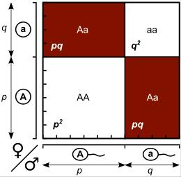

문제 2
집단 내 대립 유전자의 종류와 빈도가 변하지 않는 유전적 평형은 그 원리가 하디-바인베르크 법칙으로 표현된다. 그러나 자연 집단에서는 여러 가지 요인에 의해 유전자풀이 변화되므로 유전적 평형을 나타내는 경우는 찾아볼 수 없다.

(가) 유전적 평형이 유지되려면 어떤 조건이 충족되어야 하는가? 다섯 가지 이상 설명하시오. [50점]
(나) 자연 집단에서 유전자풀을 변화시키는 요인을 말하고 각각을 설명하시오. 그리고 이 요인들로 인해 유전자풀이 변화하면 어떤 변화가 일어나는지 다섯 가지 이상 설명하시오. [50점]